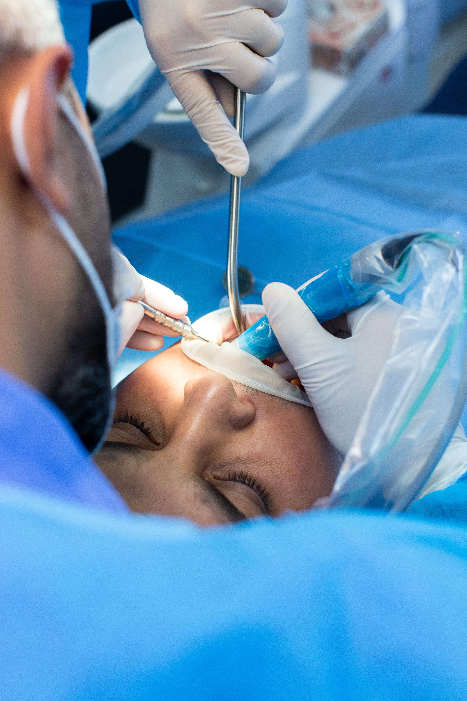

La cirugía oral y maxilofacial es una especialidad que trata problemas relacionados con la boca, los dientes, los huesos de la cara y la mandíbula.
La cirugía oral y maxilofacial ofrece beneficios como la corrección de problemas funcionales en la mandíbula, dientes y estructuras faciales, lo que mejora la masticación, la respiración y la fonación. Permite tratar afecciones como quistes, tumores, infecciones y fracturas faciales, restaurando la salud y la simetría del rostro. También ayuda a aliviar dolor crónico causado por muelas del juicio o trastornos de la articulación temporomandibular. Además, mejora la estética facial y la calidad de vida.
